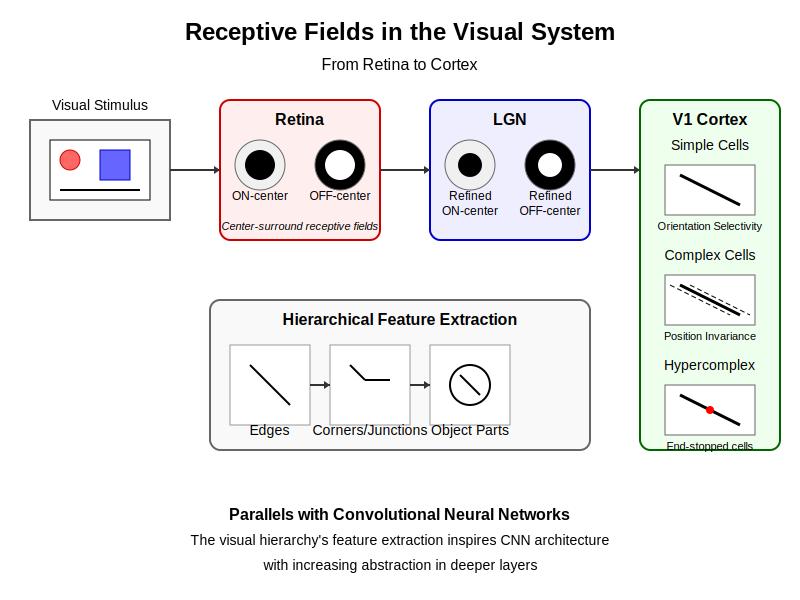

Chapter 4: Perception Pipeline – Visual Cortex → CNNs#
4.0 Chapter Goals#
Trace the visual processing pipeline from retina to higher cortical areas
Understand receptive fields and hierarchical feature extraction
Connect biological vision to convolutional neural networks
Implement simple visual filters and feature detectors
4.1 Visual System Architecture#
The visual system represents one of the most extensively studied sensory pathways in neuroscience, offering rich insights that have directly influenced artificial intelligence. This section explores how visual information flows from the eye through successively more complex processing stages.
Figure 4.1: The visual processing pathway from retina through subcortical structures to cortical areas, showing parallel processing streams.
4.1.1 From Retina to LGN to Primary Visual Cortex#
Visual processing begins in the retina, which is actually an extension of the brain rather than a simple sensor:
Retinal Processing:
Photoreceptors (rods and cones) transduce light into neural signals
Horizontal, bipolar, and amacrine cells perform initial processing
Retinal ganglion cells form center-surround receptive fields
~1 million ganglion cell axons form the optic nerve from each eye
import numpy as np
import matplotlib.pyplot as plt
from matplotlib.patches import Circle
from scipy import ndimage
def center_surround_receptive_field(size=15, center_sigma=1.0, surround_sigma=2.0, center_weight=1.0, surround_weight=0.5):
"""Generate a center-surround receptive field similar to retinal ganglion cells."""
grid = np.arange(-size//2, size//2+1)
xx, yy = np.meshgrid(grid, grid)
# Create center and surround Gaussians
center = np.exp(-(xx**2 + yy**2) / (2 * center_sigma**2))
surround = np.exp(-(xx**2 + yy**2) / (2 * surround_sigma**2))
# Combine to form center-surround
receptive_field = center_weight * center - surround_weight * surround
return receptive_field
# Create ON-center and OFF-center receptive fields
on_center_rf = center_surround_receptive_field(center_weight=1.0, surround_weight=0.5)
off_center_rf = -on_center_rf
# Visualize the receptive fields
fig, axes = plt.subplots(1, 2, figsize=(10, 5))
im1 = axes[0].imshow(on_center_rf, cmap='RdBu_r')
axes[0].set_title('ON-center Receptive Field')
axes[0].set_xticks([])
axes[0].set_yticks([])
plt.colorbar(im1, ax=axes[0])
im2 = axes[1].imshow(off_center_rf, cmap='RdBu_r')
axes[1].set_title('OFF-center Receptive Field')
axes[1].set_xticks([])
axes[1].set_yticks([])
plt.colorbar(im2, ax=axes[1])
plt.tight_layout()
# plt.show() # Uncomment to display
Lateral Geniculate Nucleus (LGN):
Subcortical relay station in the thalamus
Maintains retinotopic organization (spatial mapping)
Separates input into parallel channels:
Parvocellular pathway (P cells): High resolution, color
Magnocellular pathway (M cells): Motion, low contrast sensitivity
Koniocellular pathway (K cells): Blue-yellow color, other functions
Primary Visual Cortex (V1):
Located in the occipital lobe
First stage of cortical visual processing
Organized in retinotopic map of visual field
Divided into six layers with distinct cell types and connections
Contains orientation-selective cells (simple and complex)
Processes basic features: orientation, spatial frequency, color, motion
From V1, information flows to higher visual areas (V2, V3, V4, etc.) that extract increasingly complex features.
4.1.2 Ventral vs Dorsal Streams: “What” vs “Where”#
Visual processing bifurcates into two main pathways beyond V1 and V2:
Ventral Stream (the “What” pathway):
Flows from V1 → V2 → V4 → Inferior Temporal (IT) cortex
Specializes in object recognition and form processing
Receptive fields increase in size and complexity along the pathway
Culminates in cells that respond to complex objects regardless of position, size, or lighting
Lesions cause object recognition deficits (visual agnosia)
Dorsal Stream (the “Where”/”How” pathway):
Flows from V1 → V2 → V3 → Middle Temporal (MT/V5) → Posterior Parietal cortex
Specializes in spatial relationships and motion
Processes location, movement, and action-relevant properties
Critical for visuomotor coordination and spatial attention
Lesions cause spatial awareness deficits (e.g., hemispatial neglect)
This dual-pathway organization has inspired various dual-stream architectures in artificial intelligence, particularly for tasks requiring both recognition and localization.
4.1.3 Hierarchical Organization of Visual Cortex#
The visual cortex exhibits a clear hierarchical organization:
def display_visual_hierarchy():
"""Display the visual processing hierarchy and key properties."""
visual_areas = [
{
"area": "V1",
"receptive_field_size": "~1°",
"feature_complexity": "Oriented edges, bars, gratings",
"invariance": "Minimal position invariance"
},
{
"area": "V2",
"receptive_field_size": "~2-4°",
"feature_complexity": "Contours, textures, illusory contours",
"invariance": "Limited position invariance"
},
{
"area": "V4",
"receptive_field_size": "~4-8°",
"feature_complexity": "Shape fragments, curvature, color",
"invariance": "Moderate position and size invariance"
},
{
"area": "IT (PIT/CIT/AIT)",
"receptive_field_size": "~10-30°",
"feature_complexity": "Object parts, faces, complex shapes",
"invariance": "Strong invariance to position, size, and viewpoint"
}
]
print("Visual Processing Hierarchy - Ventral Stream")
print("-" * 80)
print(f"{'Area':<8} {'RF Size':<15} {'Feature Complexity':<35} {'Invariance':<30}")
print("-" * 80)
for area in visual_areas:
print(f"{area['area']:<8} {area['receptive_field_size']:<15} {area['feature_complexity']:<35} {area['invariance']:<30}")
Key principles of this hierarchical organization include:
Progressive Abstraction: Higher areas represent more complex features and objects
Increasing Receptive Field Size: Receptive fields become larger at higher levels
Growing Invariance: Higher areas show greater invariance to transformations (position, size, etc.)
Declining Retinotopy: Spatial organization becomes less precise in higher areas
Increasing Response Latency: Processing time increases along the hierarchy
4.1.4 Feedback Connections and Top-Down Processing#
While the visual system is often explained as a feedforward hierarchy, feedback connections are equally important:
Feedback projections outnumber feedforward connections in the visual cortex
Higher areas send predictions to lower areas
Feedback modulates response properties and selectivity
Facilitates attention, expectation, and context effects
Enables perceptual completion and object disambiguation
These recurrent connections enable the visual system to integrate prior knowledge and context with incoming sensory signals, forming the basis for predictive processing frameworks.
4.2 Receptive Fields#
Receptive fields—the regions of visual space that influence a neuron’s response—are fundamental to understanding visual processing in both biological and artificial systems.
 Figure 4.2: Different types of receptive fields in the visual pathway, from center-surround to oriented bars to complex pattern detectors.
4.2.1 Simple, Complex, and Hypercomplex Cells#
Hubel and Wiesel’s groundbreaking work in the 1960s identified three main classes of cells in the visual cortex:
Simple Cells:
Linear summation of inputs within precisely defined excitatory and inhibitory regions
Selective for orientation, position, and size of stimuli
Predictable responses based on exact stimulus location
Example: cells that respond to bars or edges with specific orientations at precise locations
def simple_cell_model(image, orientation_deg, sigma_x=4, sigma_y=1, center_x=0, center_y=0):
"""
Simulate a simple cell in V1 using a Gabor filter.
Args:
image: Input image (grayscale)
orientation_deg: Preferred orientation in degrees
sigma_x, sigma_y: Gaussian envelope widths
center_x, center_y: Center coordinates
Returns:
Simple cell response to the input image
"""
# Convert orientation to radians
orientation = np.deg2rad(orientation_deg)
# Create a grid of coordinates
rows, cols = image.shape
x, y = np.meshgrid(np.arange(cols), np.arange(rows))
x = x - cols/2 - center_x
y = y - rows/2 - center_y
# Rotate coordinates
x_theta = x * np.cos(orientation) + y * np.sin(orientation)
y_theta = -x * np.sin(orientation) + y * np.cos(orientation)
# Gabor filter components
gaussian = np.exp(-(x_theta**2 / (2*sigma_x**2) + y_theta**2 / (2*sigma_y**2)))
sinusoid = np.sin(2 * np.pi * x_theta / (4*sigma_x))
# Gabor filter (receptive field)
gabor = gaussian * sinusoid
# Apply the filter (convolve with the image)
response = ndimage.convolve(image.astype(float), gabor, mode='constant')
return response, gabor
# Example usage (with a synthetic edge image)
def create_edge_image(size=64, angle_deg=45, edge_position=0, edge_width=1):
"""Create a simple edge image for demonstration."""
angle = np.deg2rad(angle_deg)
x, y = np.meshgrid(np.linspace(-1, 1, size), np.linspace(-1, 1, size))
# Rotate coordinates
x_rot = x * np.cos(angle) + y * np.sin(angle)
# Create edge
edge = (x_rot > edge_position).astype(float)
# Smooth the edge slightly
edge = ndimage.gaussian_filter(edge, sigma=edge_width)
return edge
Complex Cells:
Respond to oriented edges and bars regardless of exact position
Maintain orientation selectivity but exhibit spatial invariance
Often modeled as combining outputs from multiple simple cells
Example: cells that respond to a vertical edge anywhere within their receptive field
def complex_cell_model(image, orientation_deg, sigma_x=4, sigma_y=1, positions=5, spacing=2):
"""
Simulate a complex cell by combining responses from multiple simple cells.
Args:
image: Input image
orientation_deg: Preferred orientation
sigma_x, sigma_y: Filter parameters
positions: Number of simple cells to combine
spacing: Spacing between simple cell centers
Returns:
Complex cell response
"""
# Generate responses from multiple simple cells at different positions
responses = []
for i in range(positions):
# Calculate position offset
offset = (i - positions // 2) * spacing
# Get simple cell response
simple_response, _ = simple_cell_model(
image, orientation_deg, sigma_x, sigma_y, center_x=offset, center_y=0)
responses.append(simple_response)
# Complex cell combines simple cell responses (maximum response at each point)
complex_response = np.maximum.reduce(responses)
return complex_response
Hypercomplex (End-Stopped) Cells:
Selective for specific stimulus properties beyond orientation
Respond to line endings, curvature, or corners
Can be direction-selective or sensitive to specific motion patterns
Example: cells that respond to a line segment of specific length but not to a longer line
These cell types implement a hierarchical feature detection system, where complex cells build invariance to position, and hypercomplex cells detect more specialized features needed for object recognition.
4.2.2 Gabor Filters and Orientation Selectivity#
The orientation selectivity of V1 cells is well-modeled by Gabor filters—sinusoidal gratings modulated by a Gaussian envelope:
def visualize_gabor_filters():
"""Visualize Gabor filters at different orientations and frequencies."""
orientations = [0, 45, 90, 135]
frequencies = [0.1, 0.2, 0.3]
fig, axes = plt.subplots(len(frequencies), len(orientations), figsize=(12, 9))
for i, freq in enumerate(frequencies):
for j, orient in enumerate(orientations):
# Create Gabor filter
sigma_x = 10
sigma_y = 10
x, y = np.meshgrid(np.arange(-20, 21), np.arange(-20, 21))
# Rotate coordinates
orient_rad = np.deg2rad(orient)
x_theta = x * np.cos(orient_rad) + y * np.sin(orient_rad)
y_theta = -x * np.sin(orient_rad) + y * np.cos(orient_rad)
# Create Gabor filter
gaussian = np.exp(-(x_theta**2 + y_theta**2) / (2 * sigma_x**2))
sinusoid = np.sin(2 * np.pi * freq * x_theta)
gabor = gaussian * sinusoid
# Display the filter
axes[i, j].imshow(gabor, cmap='RdBu_r')
axes[i, j].set_title(f"{orient}°, f={freq}")
axes[i, j].axis('off')
plt.tight_layout()
# plt.show() # Uncomment to display
Key properties of Gabor filters that match V1 neurophysiology:
Orientation Selectivity: Responds strongly to edges/gratings at a preferred orientation
Spatial Frequency Selectivity: Tuned to specific scales or frequencies
Localization: Well-defined in both spatial and frequency domains
Phase Sensitivity: Different cells prefer different phases of gratings
Bandwidth: Cells have specific tuning widths for orientation and frequency
The orientation preference of neurons in V1 is organized in a systematic way:
Cells with similar orientation preferences cluster in “orientation columns”
Adjacent columns represent gradually changing orientations, forming “pinwheels”
This organization efficiently covers the space of all possible orientations
4.2.3 Center-Surround Organization#
Center-surround receptive fields are foundational to early visual processing:
Retinal Ganglion Cells:
ON-center cells: Excited by light in center, inhibited by light in surround
OFF-center cells: Inhibited by light in center, excited by light in surround
Function as contrast detectors and edge enhancers
Perform efficient coding by reducing redundancy in natural images
LGN Cells:
Maintain the center-surround organization from retinal inputs
P cells: Small receptive fields, color-opponent (red-green)
M cells: Larger receptive fields, higher contrast sensitivity
K cells: Blue-yellow color opponency
This center-surround organization implements a form of local normalization and contrast enhancement that is also found in early layers of CNNs.
4.2.4 Feature Hierarchy from V1 to IT#
As we move from V1 through the ventral stream to IT cortex, cells respond to increasingly complex features:
def feature_hierarchy_visual():
"""Visualization of the feature hierarchy in the ventral visual stream."""
areas = ["V1", "V2", "V4", "IT"]
features = [
"Oriented edges, bars",
"Contours, textures",
"Shape fragments, curves",
"Objects, faces, scenes"
]
# This would generate a visualization in a real notebook
feature_map = {areas[i]: features[i] for i in range(len(areas))}
return feature_map
V1: Orientation, spatial frequency, edges, local features
V2: Combinations of orientations, contours, textures
Responds to illusory contours
Sensitive to border ownership
Begins processing figure-ground relationships
V4: Shape fragments, curvature, color
Object-part selective responses
Moderate invariance to size and position
Attention strongly modulates responses
IT Cortex: Objects, faces, complex patterns
Cells selective for specific object categories
“Grandmother cells” that respond to particular face identities
High invariance to transformations (position, size, viewpoint)
Organized in specialized modules (e.g., fusiform face area)
This hierarchical feature organization is a key principle that directly inspired convolutional neural networks.
4.3 CNN Parallels#
Convolutional Neural Networks (CNNs) incorporate many principles from the visual system, representing a striking example of neuroscience-inspired AI.
 Figure 4.3: Parallels between the visual cortex hierarchy and layers of a convolutional neural network.
Figure 4.3: Parallels between the visual cortex hierarchy and layers of a convolutional neural network.
4.3.1 Convolutional Layers as Receptive Fields#
Convolutional layers in CNNs implement the same basic principle as receptive fields in the visual cortex:
import torch
import torch.nn as nn
import torch.nn.functional as F
class SimpleConvNet(nn.Module):
def __init__(self):
super(SimpleConvNet, self).__init__()
# First convolutional layer - similar to V1 simple cells
self.conv1 = nn.Conv2d(in_channels=1, out_channels=6, kernel_size=5, padding=2)
# Second convolutional layer - similar to V2
self.conv2 = nn.Conv2d(in_channels=6, out_channels=16, kernel_size=5)
# Fully connected layers - similar to higher visual areas
self.fc1 = nn.Linear(16 * 5 * 5, 120)
self.fc2 = nn.Linear(120, 84)
self.fc3 = nn.Linear(84, 10) # 10 output classes
def forward(self, x):
# Conv + ReLU + Max Pooling: detection + spatial invariance
x = F.max_pool2d(F.relu(self.conv1(x)), kernel_size=2)
x = F.max_pool2d(F.relu(self.conv2(x)), kernel_size=2)
# Flatten to vector for fully connected layers
x = x.view(-1, 16 * 5 * 5)
# Fully connected layers with ReLU
x = F.relu(self.fc1(x))
x = F.relu(self.fc2(x))
x = self.fc3(x)
return x
# Create a simple CNN
simple_cnn = SimpleConvNet()
# Initialize with random image (1 channel, 28x28 pixels)
sample_input = torch.randn(1, 1, 28, 28)
# Visualize the first layer filters after training (in a real notebook)
def visualize_filters(model):
"""Visualize the filters learned in the first convolutional layer."""
# Extract filters from the first layer
filters = model.conv1.weight.data.numpy()
# For demonstration purpose, just return the filter shapes
return filters.shape
Key parallels between convolutional layers and visual receptive fields:
Local Connectivity: Convolutional filters only connect to a small region of the input, just like receptive fields
Weight Sharing: The same filter is applied across the entire input, similar to how V1 cells with the same orientation preference process different parts of the visual field
Hierarchical Processing: Deeper layers process the outputs of earlier layers to detect more complex patterns
Feature Detectors: First-layer filters often learn Gabor-like patterns similar to V1 cells
Parameter Efficiency: Both systems reduce parameters through spatial weight sharing
4.3.2 Pooling Operations and Invariance#
Pooling layers in CNNs create invariance to small transformations, analogous to complex cells in V1:
def demonstrate_pooling(image, pool_size=2, stride=2):
"""Demonstrate how pooling creates invariance to small translations."""
# Create a small translated version of the image
rows, cols = image.shape
translation = 1 # Translate by 1 pixel
translated_image = np.zeros_like(image)
translated_image[translation:, translation:] = image[:-translation, :-translation]
# Apply max pooling to both images
def max_pool(img, pool_size, stride):
result = np.zeros((img.shape[0]//stride, img.shape[1]//stride))
for i in range(0, img.shape[0]-pool_size+1, stride):
for j in range(0, img.shape[1]-pool_size+1, stride):
result[i//stride, j//stride] = np.max(img[i:i+pool_size, j:j+pool_size])
return result
pooled_orig = max_pool(image, pool_size, stride)
pooled_trans = max_pool(translated_image, pool_size, stride)
# Compute similarity between pooled representations
similarity = np.corrcoef(pooled_orig.flatten(), pooled_trans.flatten())[0, 1]
# Return results (would visualize in a real notebook)
return {
"original_shape": image.shape,
"pooled_shape": pooled_orig.shape,
"similarity_after_pooling": similarity
}
Parallels between pooling and biological visual processing:
Translation Invariance: Max pooling creates robustness to exact positioning, similar to complex cells
Dimensionality Reduction: Pooling reduces spatial dimensions, similar to increasing receptive field sizes in higher visual areas
Hierarchical Invariance: Stacking convolutional and pooling layers creates increasing invariance, mirroring the ventral stream
Feature Integration: Pooling helps integrate features over local regions
The increasing invariance to transformations is a key feature of the ventral stream that CNNs replicate through their architecture.
4.3.3 Feature Hierarchies in Deep Networks#
Deep CNNs develop feature hierarchies strikingly similar to the visual cortex:
def visualize_cnn_hierarchy():
"""Illustrate the hierarchy of features learned in different CNN layers."""
cnn_hierarchy = {
"layer1": {
"feature_type": "Edges, textures, colors",
"biological_parallel": "V1 simple cells (oriented edge detectors)",
"receptive_field": "Small (e.g., 5x5 pixels)"
},
"layer2": {
"feature_type": "Corners, contours, simple textures",
"biological_parallel": "V2 cells (contour integration)",
"receptive_field": "Medium (effective size grows)"
},
"layer3": {
"feature_type": "Object parts, complex textures",
"biological_parallel": "V4 cells (shape fragments)",
"receptive_field": "Large (encompasses significant portion of image)"
},
"layer4": {
"feature_type": "Object detectors, category-specific features",
"biological_parallel": "IT cells (object and category selective)",
"receptive_field": "Very large (most of the image)"
}
}
return cnn_hierarchy
Zeiler and Fergus (2014) demonstrated this hierarchy by visualizing features learned at different layers of a CNN:
First Layer: Oriented edges, color blobs (like V1)
Middle Layers: Textures, patterns, object parts (like V2/V4)
Deep Layers: Object detectors, category-specific features (like IT)
This emergent hierarchy develops through training, without being explicitly programmed—a case of convergent evolution between biological and artificial systems.
4.3.4 Visualization of CNN Features#
Techniques to visualize CNN features have revealed striking similarities to biological vision:
def feature_visualization_techniques():
"""Summarize techniques for visualizing CNN features."""
techniques = {
"Activation Maximization": {
"approach": "Optimize input to maximize activation of specific neurons",
"insight": "Reveals preferred stimuli of units, similar to neurophysiology experiments"
},
"Deconvolution & Guided Backprop": {
"approach": "Back-project activations to input space to visualize what activated units",
"insight": "Shows what patterns in input space drive specific features"
},
"Feature Inversion": {
"approach": "Reconstruct image from feature representations",
"insight": "Reveals what information is preserved at each layer"
},
"GradCAM": {
"approach": "Use gradients to identify important regions for classification",
"insight": "Shows attention-like focus on diagnostic image regions"
}
}
return techniques
These visualization techniques have revealed that:
Early CNN layers develop Gabor-like filters similar to V1 neurons
Intermediate layers detect combinations of edges and textures
Deep layers contain units selective for specific objects or parts
CNNs develop specialized detectors for faces, text, and other categories
The similarity between CNN feature visualization and neurophysiological recordings is one of the most compelling connections between artificial and biological vision.
4.4 From Biology to Deep Learning#
The development of CNNs represents a clear example of neuroscience directly inspiring AI advances.
4.4.1 Hubel & Wiesel’s Discoveries → Neocognitron → LeNet → AlexNet#
The lineage from visual neuroscience to modern deep learning is direct and well-documented:
Hubel & Wiesel (1960s):
Discovered simple and complex cells in cat visual cortex
Identified hierarchical processing and receptive fields
Won Nobel Prize in 1981 for this groundbreaking work
Neocognitron (Fukushima, 1980):
First computational model directly inspired by Hubel & Wiesel
Introduced alternating feature detection and pooling layers
Pioneered the basic CNN architecture but lacked effective training
LeNet (LeCun et al., 1989-1998):
Added backpropagation to train the network end-to-end
Developed for handwritten digit recognition (MNIST)
Demonstrated the effectiveness of convolutional architecture
Limited by computational constraints of the era
AlexNet (Krizhevsky et al., 2012):
Scaled up CNN approach with GPU implementation
Won ImageNet competition by large margin
Triggered the deep learning revolution
Maintained the same biological inspiration from earlier work
def cnn_evolution_timeline():
"""Create a timeline of CNN evolution from biological inspiration to modern architectures."""
timeline = [
{"year": "1959-1968", "development": "Hubel & Wiesel discover simple and complex cells in visual cortex"},
{"year": "1980", "development": "Fukushima's Neocognitron: First hierarchical convolutional architecture"},
{"year": "1989", "development": "LeCun introduces backpropagation for training CNNs"},
{"year": "1998", "development": "LeNet-5 demonstrates effective digit recognition"},
{"year": "2012", "development": "AlexNet wins ImageNet, starts deep learning revolution"},
{"year": "2014", "development": "VGGNet and GoogLeNet deepen and refine architectures"},
{"year": "2015", "development": "ResNet introduces skip connections, enabling very deep networks"},
{"year": "2017+", "development": "Advanced architectures (DenseNet, EfficientNet) optimize CNN design"}
]
return timeline
This direct lineage demonstrates how neuroscience insights laid the foundation for transformative AI advances decades later.
4.4.2 Biological Constraints vs Engineering Solutions#
While CNNs draw inspiration from biology, they also diverge in significant ways:
Biological Features Maintained:
Local receptive fields and hierarchical processing
Feature detection followed by pooling for invariance
Increasingly complex feature representations
Parallel processing of different visual attributes
Engineering Departures:
Backpropagation (biologically implausible in its standard form)
Separate forward and backward passes
Weight sharing across entire feature maps
Supervised training with labeled examples
Batch normalization and other engineering optimizations
def compare_bio_vs_engineering():
"""Compare biological visual systems with CNN engineering approaches."""
comparison = {
"Learning": {
"Biology": "Hebbian learning, STDP, reinforcement, unsupervised",
"CNNs": "Backpropagation, supervised learning with labels"
},
"Architecture": {
"Biology": "Recurrent connections, feedback pathways, modulatory inputs",
"CNNs": "Primarily feedforward, limited recurrence in some designs"
},
"Activation": {
"Biology": "Spiking neurons with temporal dynamics",
"CNNs": "Continuous-valued activations (ReLU, etc.)"
},
"Efficiency": {
"Biology": "Extremely energy efficient, sparse activity",
"CNNs": "Computationally intensive, dense computation"
},
"Learning Speed": {
"Biology": "Fast one-shot learning for some tasks",
"CNNs": "Requires many examples, but improving with few-shot methods"
}
}
return comparison
These differences represent engineering pragmatism: CNNs adopt biologically-inspired principles where helpful but diverge where engineering solutions are more effective.
4.4.3 Normalization and Gain Control Mechanisms#
Both biological and artificial visual systems implement normalization:
Biological Normalization:
Contrast normalization in retina and LGN
Cross-orientation inhibition in V1
Surround suppression effects
Divisive normalization across neural populations
Adaptation to prevailing input statistics
CNN Normalization:
Batch normalization
Layer normalization
Instance normalization
Group normalization
Local response normalization (used in AlexNet)
def normalization_example():
"""Demonstrate the effect of normalization in neural processing."""
# Create sample activations
activations = np.random.gamma(shape=2, scale=2, size=1000) # Skewed distribution
# Apply divisive normalization (simplified model)
def divisive_normalization(act, sigma=1.0, neighborhood_size=50):
normalized = np.zeros_like(act)
for i in range(len(act)):
# Define local neighborhood
start = max(0, i - neighborhood_size//2)
end = min(len(act), i + neighborhood_size//2)
neighborhood = act[start:end]
# Compute normalization factor
norm_factor = np.sqrt(sigma**2 + np.sum(neighborhood**2))
# Normalize
normalized[i] = act[i] / norm_factor
return normalized
normalized_activations = divisive_normalization(activations)
# Compare statistics
stats = {
"original_mean": np.mean(activations),
"original_std": np.std(activations),
"original_max": np.max(activations),
"normalized_mean": np.mean(normalized_activations),
"normalized_std": np.std(normalized_activations),
"normalized_max": np.max(normalized_activations)
}
return stats
Normalization serves several key functions:
Stabilizes training by controlling activation distributions
Enables efficient coding by adapting to input statistics
Enhances discriminability by emphasizing differences
Manages the dynamic range of neural responses
The parallel implementation of normalization in both systems highlights its computational importance.
4.4.4 Attention Mechanisms#
Attention mechanisms represent another area of convergence:
Visual Attention in the Brain:
Selective enhancement of relevant visual regions
Spotlight or zoom lens models of spatial attention
Feature-based attention that enhances specific attributes
Modulation by frontal and parietal control networks
Enhanced processing and perceptual quality in attended regions
Attention in Deep Learning:
Spatial attention mechanisms in CNNs
Channel attention (e.g., Squeeze-and-Excitation Networks)
Self-attention in Transformers (now integrated into vision models)
Cross-attention between modalities
Hard attention (selecting specific regions) vs. soft attention (weighting)
def attention_mechanisms():
"""Compare biological and artificial attention mechanisms."""
attention_comparison = {
"Spatial Attention": {
"Biology": "Enhanced processing at attended locations, controlled by FEF/IPS",
"AI": "Spatial attention maps, region proposal networks, visual transformers"
},
"Feature Attention": {
"Biology": "Enhanced processing of attended features across visual field",
"AI": "Channel attention mechanisms, feature emphasizing"
},
"Effects": {
"Biology": "Increased firing rates, improved discriminability, reduced latency",
"AI": "Weighted feature maps, selected processing pathways"
},
"Control": {
"Biology": "Top-down control from prefrontal and parietal cortex",
"AI": "Learned attention weights, explicit guidance mechanisms"
}
}
return attention_comparison
Recent CNN architectures increasingly incorporate attention mechanisms, moving beyond pure feedforward processing toward more brain-like dynamic routing of information.
4.5 Beyond Feedforward Processing#
While early CNNs focused on feedforward processing, both biological vision and cutting-edge AI incorporate more complex processing dynamics.
4.5.1 Recurrence in Visual Processing#
The visual cortex contains extensive recurrent connections:
Biological Recurrence:
Local recurrent circuits within cortical areas
Feedback connections from higher to lower areas
Horizontal connections linking neurons within layers
Temporal dynamics and sustained activity patterns
AI Recurrence:
Recurrent convolutional networks
Convolutional LSTMs
CORnet and similar biologically-inspired models
Transformer-based architectures with self-attention
class RecurrentConvLayer(nn.Module):
"""Simple implementation of a recurrent convolutional layer."""
def __init__(self, input_channels, output_channels, kernel_size=3, padding=1):
super(RecurrentConvLayer, self).__init__()
self.input_channels = input_channels
self.output_channels = output_channels
# Forward connection
self.conv_forward = nn.Conv2d(
input_channels, output_channels, kernel_size, padding=padding)
# Recurrent connection
self.conv_recurrent = nn.Conv2d(
output_channels, output_channels, kernel_size, padding=padding)
# Activation function
self.relu = nn.ReLU(inplace=True)
def forward(self, x, prev_state=None):
# Forward pass
h_new = self.conv_forward(x)
# Add recurrent connection if previous state exists
if prev_state is not None:
h_new = h_new + self.conv_recurrent(prev_state)
# Apply non-linearity
h_new = self.relu(h_new)
return h_new
Recurrent processing enables:
Integration of information over time
Refinement of initial representations
Context-sensitive processing
Figure-ground segmentation
Perceptual completion and illusion
Incorporating recurrence brings AI systems closer to biological vision and can improve performance on challenging tasks.
4.5.2 Predictive Coding and Generative Models#
The brain appears to implement predictive processing, which has inspired generative models in AI:
Predictive Coding in the Brain:
Higher levels predict lower-level activity
Prediction errors drive learning and updating
Balances bottom-up evidence with top-down predictions
Explains effects like end-stopping and non-classical receptive fields
Corresponding AI Approaches:
Variational autoencoders (VAEs)
Generative adversarial networks (GANs)
Diffusion models
Hierarchical predictive coding models
def predictive_coding_model(input_image, prediction, learning_rate=0.1):
"""Simplified implementation of predictive coding update."""
# Compute prediction error
prediction_error = input_image - prediction
# Update predictions to minimize error
new_prediction = prediction + learning_rate * prediction_error
# Return updated prediction and error
return {
"prediction": new_prediction,
"prediction_error": prediction_error,
"error_magnitude": np.mean(np.abs(prediction_error))
}
Predictive coding offers a unified framework for understanding perception, learning, and attention in both biological and artificial systems.
4.5.3 Integration of Context and Prior Knowledge#
Both biological and advanced artificial vision systems integrate contextual information:
Contextual Effects in Biological Vision:
Scene context influences object recognition
Prior knowledge shapes perception of ambiguous stimuli
Contour integration and grouping phenomena
Long-range connections create context-dependent responses
AI Approaches to Context:
Scene graph models
Contextual attention mechanisms
Memory networks that maintain context
Multimodal systems integrating vision with language
def contextual_influence_demo():
"""Demonstrate how context influences perception."""
# Example of ambiguous stimuli with different contexts
contexts = {
"context_A": "The chef carefully placed the ___ on the dining table.",
"context_B": "The courier delivered the ___ to the customer.",
"ambiguous_stimulus": "plate" # Could be dinner plate or tectonic plate
}
# Simulated perception based on context (would be model outputs in practice)
perceptions = {
"context_A": {
"interpretation": "dinner plate",
"confidence": 0.95,
"associated_features": ["round", "ceramic", "food-related"]
},
"context_B": {
"interpretation": "shipment package",
"confidence": 0.82,
"associated_features": ["cardboard", "shipping label", "delivery"]
}
}
return {"contexts": contexts, "perceptions": perceptions}
Integrating context and prior knowledge brings artificial systems closer to human-like perception with its robust, context-sensitive interpretation.
4.5.4 The Free Energy Principle#
The free energy principle provides a unifying theoretical framework that may explain many aspects of brain function:
Key Concepts:
The brain minimizes prediction error (free energy)
Perception is inference about the causes of sensory data
Learning improves the generative model to better predict inputs
Attention allocates resources to minimize expected free energy
AI Implementations:
Variational inference methods
Active inference models
Energy-based models
Self-supervised predictive learning approaches
def free_energy_calculation(sensory_data, predicted_data, model_complexity):
"""Simplified calculation of free energy."""
# Prediction error component (accuracy)
prediction_error = np.mean((sensory_data - predicted_data)**2)
# Complexity penalty (regularization)
complexity_cost = model_complexity
# Free energy combines both terms
free_energy = prediction_error + complexity_cost
return {
"free_energy": free_energy,
"prediction_error": prediction_error,
"complexity_cost": complexity_cost
}
The free energy principle provides a theoretical bridge between biological and artificial intelligence, suggesting fundamental computational principles that may underlie both.
4.6 Code Lab#
Let’s explore practical implementations of visual processing concepts from both biological and artificial systems.
4.6.1 Implementing Simple Gabor Filters#
import numpy as np
import matplotlib.pyplot as plt
from scipy import ndimage
from skimage import data, color
def create_gabor_filter(size=25, sigma=3.0, theta=0, lambda_=5.0, gamma=0.5, psi=0):
"""
Create a Gabor filter kernel.
Args:
size: Size of the kernel
sigma: Standard deviation of the Gaussian envelope
theta: Orientation (in radians)
lambda_: Wavelength of sinusoidal component
gamma: Spatial aspect ratio
psi: Phase offset
Returns:
Gabor kernel
"""
# Generate grid
x, y = np.meshgrid(np.arange(-size//2, size//2+1), np.arange(-size//2, size//2+1))
# Rotation
x_theta = x * np.cos(theta) + y * np.sin(theta)
y_theta = -x * np.sin(theta) + y * np.cos(theta)
# Gaussian envelope
gb = np.exp(-(x_theta**2 + (gamma * y_theta)**2) / (2 * sigma**2))
# Sinusoidal carrier
gb *= np.cos(2 * np.pi * x_theta / lambda_ + psi)
return gb
def apply_gabor_bank(image, num_orientations=8):
"""Apply a bank of Gabor filters to an image."""
if len(image.shape) > 2:
# Convert to grayscale if color
image = color.rgb2gray(image)
# Create filters at different orientations
orientations = np.linspace(0, np.pi, num_orientations)
responses = []
filters = []
for theta in orientations:
# Create filter
gabor_kernel = create_gabor_filter(theta=theta)
filters.append(gabor_kernel)
# Apply filter
response = ndimage.convolve(image, gabor_kernel, mode='nearest')
responses.append(response)
return responses, filters
# Example usage
def gabor_demo():
# Load sample image
image = data.camera()
# Apply Gabor filters
responses, filters = apply_gabor_bank(image)
# Visualization code (would generate plots in real notebook)
return {
"image_shape": image.shape,
"num_filters": len(filters),
"filter_shape": filters[0].shape,
"response_shape": responses[0].shape
}
# Run the demo
gabor_result = gabor_demo()
print(f"Applied {gabor_result['num_filters']} Gabor filters to image of shape {gabor_result['image_shape']}")
4.6.2 Building a Basic Convolutional Layer#
import torch
import torch.nn as nn
import torch.nn.functional as F
import torchvision.transforms as transforms
from torchvision.datasets import MNIST
from torch.utils.data import DataLoader
class SimpleV1Model(nn.Module):
"""Simple CNN model inspired by V1 processing."""
def __init__(self, num_orientations=8, num_scales=3):
super(SimpleV1Model, self).__init__()
self.num_orientations = num_orientations
self.num_scales = num_scales
# Simple cells (orientation-selective filters)
self.simple_cells = nn.ModuleList([
nn.Conv2d(1, num_orientations, kernel_size=3+2*i, padding=1+i)
for i in range(num_scales)
])
# Complex cells (pooling for position invariance)
self.complex_cells = nn.ModuleList([
nn.MaxPool2d(kernel_size=2, stride=2)
for _ in range(num_scales)
])
def forward(self, x):
# Apply simple and complex cells at each scale
responses = []
for simple, complex_pool in zip(self.simple_cells, self.complex_cells):
# Simple cell response
simple_response = F.relu(simple(x))
# Complex cell response (pooling)
complex_response = complex_pool(simple_response)
# Flatten and add to responses
responses.append(complex_response.view(complex_response.size(0), -1))
# Concatenate all responses
combined = torch.cat(responses, dim=1)
return combined
# Example usage
def train_v1_model(epochs=5, batch_size=64):
"""Train a V1-inspired model on MNIST."""
# Set device
device = torch.device("cuda" if torch.cuda.is_available() else "cpu")
# Load MNIST dataset
transform = transforms.Compose([transforms.ToTensor(), transforms.Normalize((0.5,), (0.5,))])
train_dataset = MNIST(root='./data', train=True, download=True, transform=transform)
train_loader = DataLoader(train_dataset, batch_size=batch_size, shuffle=True)
# Create model
model = SimpleV1Model().to(device)
# For demonstration only - return model architecture
return {
"model_type": "V1-inspired CNN",
"parameters": sum(p.numel() for p in model.parameters()),
"architecture": str(model)
}
# Show model architecture
v1_model_info = train_v1_model()
print(f"Model architecture: {v1_model_info['architecture']}")
4.6.3 Feature Visualization Techniques#
def feature_vis_demo(model, layer_idx, feature_map_idx, iterations=100):
"""
Implement activation maximization to visualize what activates a specific feature.
Args:
model: Pretrained CNN
layer_idx: Index of layer to visualize
feature_map_idx: Index of feature map to visualize
iterations: Number of optimization iterations
Returns:
Synthesized image that maximally activates the feature
"""
# Note: This is a simplified outline of the technique
# Create a random image
image = np.random.normal(0, 1, (224, 224, 3)) * 0.1
# Convert to tensor
x = torch.tensor(image, requires_grad=True)
# Optimization loop
for i in range(iterations):
# Forward pass
activations = []
# Here we would:
# 1. Forward pass through the network up to target layer
# 2. Extract activation of target feature map
# 3. Compute loss (negative activation to maximize)
# 4. Backward pass to get gradients on input
# 5. Update input image with gradients
# 6. Apply constraints (e.g., regularization)
# For demonstration, return placeholder
activations.append(f"Iteration {i}: [simulated activation]")
# For this code template, return a description
return {
"technique": "Activation Maximization",
"target": f"Layer {layer_idx}, Feature Map {feature_map_idx}",
"iterations": iterations,
"result": "In a real implementation, returns the synthesized image"
}
4.6.4 Transfer Learning with Pre-trained CNNs#
import torchvision.models as models
from torch.optim import Adam
def transfer_learning_example():
"""Demonstrate transfer learning with a pre-trained CNN."""
# Load pre-trained model
resnet = models.resnet18(pretrained=True)
# Freeze early layers
for param in resnet.parameters():
param.requires_grad = False
# Replace final fully connected layer
num_features = resnet.fc.in_features
num_classes = 10 # e.g., for a custom dataset
resnet.fc = nn.Linear(num_features, num_classes)
# Create optimizer for only the new layer
optimizer = Adam(resnet.fc.parameters(), lr=0.001)
# In a real implementation, we would:
# 1. Load custom dataset
# 2. Create data loaders
# 3. Train the modified model
# 4. Evaluate performance
# For this template, return the model architecture
return {
"model": "ResNet-18 with transfer learning",
"frozen_layers": "All except final FC layer",
"trainable_parameters": sum(p.numel() for p in resnet.fc.parameters()),
"total_parameters": sum(p.numel() for p in resnet.parameters())
}
# Get transfer learning details
transfer_details = transfer_learning_example()
efficiency = (transfer_details["trainable_parameters"] / transfer_details["total_parameters"]) * 100
print(f"Transfer learning trains {efficiency:.2f}% of total parameters")
4.7 Take-aways#
The relationship between biological vision and CNNs demonstrates the power of neuroscience-inspired AI:
Hierarchical Feature Extraction is Universal: Both biological vision and CNNs build complex representations from simple features through hierarchical processing.
Local to Global Processing Works: Processing visual information with local receptive fields that grow in size and complexity is a powerful and efficient approach.
Feature Detection Plus Invariance: The separation of feature detection (simple cells/convolutional layers) and invariance operations (complex cells/pooling layers) is fundamental to both systems.
Beyond Feedforward: While CNNs began as purely feedforward, both biological vision and cutting-edge AI increasingly incorporate recurrence, feedback, and context.
Convergent Evolution: The strong similarities between features learned by CNNs and those observed in the visual cortex suggest fundamental principles of efficient visual processing.
Bidirectional Insights: Neuroscience continues to inspire AI innovations, while AI implementations help test and refine theories about biological vision.
This bidirectional flow of insights exemplifies the value of interdisciplinary research between neuroscience and artificial intelligence.
4.8 Further Reading & Media#
Foundational Papers#
Hubel, D. H., & Wiesel, T. N. (1962). Receptive fields, binocular interaction and functional architecture in the cat’s visual cortex. The Journal of physiology, 160(1), 106-154.
Fukushima, K. (1980). Neocognitron: A self-organizing neural network model for a mechanism of pattern recognition unaffected by shift in position. Biological cybernetics, 36(4), 193-202.
LeCun, Y., Bottou, L., Bengio, Y., & Haffner, P. (1998). Gradient-based learning applied to document recognition. Proceedings of the IEEE, 86(11), 2278-2324.
Krizhevsky, A., Sutskever, I., & Hinton, G. E. (2012). Imagenet classification with deep convolutional neural networks. Advances in neural information processing systems, 25.
Biological Vision#
Felleman, D. J., & Van Essen, D. C. (1991). Distributed hierarchical processing in the primate cerebral cortex. Cerebral cortex, 1(1), 1-47.
Carandini, M., Demb, J. B., Mante, V., Tolhurst, D. J., Dan, Y., Olshausen, B. A., … & Rust, N. C. (2005). Do we know what the early visual system does?. Journal of Neuroscience, 25(46), 10577-10597.
DiCarlo, J. J., Zoccolan, D., & Rust, N. C. (2012). How does the brain solve visual object recognition?. Neuron, 73(3), 415-434.
CNN Visualization & Analysis#
Zeiler, M. D., & Fergus, R. (2014). Visualizing and understanding convolutional networks. European conference on computer vision (pp. 818-833).
Yamins, D. L., Hong, H., Cadieu, C. F., Solomon, E. A., Seibert, D., & DiCarlo, J. J. (2014). Performance-optimized hierarchical models predict neural responses in higher visual cortex. Proceedings of the National Academy of Sciences, 111(23), 8619-8624.
Olah, C., Mordvintsev, A., & Schubert, L. (2017). Feature visualization. Distill, 2(11), e7.
Advanced Topics#
Kriegeskorte, N. (2015). Deep neural networks: a new framework for modeling biological vision and brain information processing. Annual review of vision science, 1, 417-446.
Kietzmann, T. C., McClure, P., & Kriegeskorte, N. (2019). Deep neural networks in computational neuroscience. Oxford Research Encyclopedia of Neuroscience.
Kubilius, J., Schrimpf, M., Nayebi, A., Bear, D., Yamins, D. L., & DiCarlo, J. J. (2018). CORnet: Modeling the neural mechanisms of core object recognition. BioRxiv, 408385.
Books#
Wandell, B. A. (1995). Foundations of vision. Sinauer Associates.
Palmer, S. E. (1999). Vision science: Photons to phenomenology. MIT press.
Goodfellow, I., Bengio, Y., & Courville, A. (2016). Deep learning. MIT press.
DiCarlo, Zoccolan & Rust (2012) - “How Does the Brain Solve Visual Object Recognition?”
Kriegeskorte (2015) - “Deep Neural Networks: A New Framework for Modeling Biological Vision”
Yamins & DiCarlo (2016) - “Using goal-driven deep learning models to understand sensory cortex”
In-Depth Content#

The Human Visual System#
The visual processing pipeline begins with the retina, where photoreceptors convert light into electrical signals. These signals pass through retinal ganglion cells, which perform the first stage of processing - edge detection and contrast enhancement through center-surround receptive fields. The signals then travel via the optic nerve to the lateral geniculate nucleus (LGN) of the thalamus, which acts as a relay station, before reaching the primary visual cortex (V1) in the occipital lobe.
In V1, neurons have small receptive fields that respond to oriented edges in specific parts of the visual field. As information flows to higher areas (V2, V4, IT cortex), neurons have progressively larger receptive fields and respond to more complex patterns - from corners and simple shapes to specific objects or faces. This hierarchical organization forms the basis for the layered architecture in artificial neural networks designed for visual processing.
Receptive Fields and Hierarchies#
A key discovery by Hubel and Wiesel in the 1960s was that neurons in the visual cortex act as feature detectors. Simple cells in V1 respond to oriented edges at specific locations, complex cells respond to oriented edges regardless of exact position, and hypercomplex cells (end-stopped cells) respond to edges of specific lengths or corners.
The receptive field of a visual neuron is the region of visual space that, when stimulated, affects the firing of that neuron. As visual information progresses through the cortical hierarchy, receptive fields become larger and encode more complex features:
V1 neurons: Oriented edges, spatial frequency, color
V2 neurons: Contours, figure-ground separation
V4 neurons: Shape features, curvature
IT neurons: Complex objects, faces
This progressive abstraction of visual features - from simple to complex - is the key insight that informed the development of convolutional neural networks.
Convolutional Neural Networks#
CNNs mirror the architecture of the visual cortex in several key ways:
Convolutional layers: Like visual cortex neurons, CNN filters scan across the image and respond to specific patterns within their receptive field. Early layers detect simple features (edges, textures) while deeper layers combine these to detect complex objects.
Local connectivity: Rather than connecting to every input pixel (as in fully-connected networks), CNN neurons connect only to a small region, similar to the receptive fields in the visual system.
Hierarchical processing: CNNs stack multiple layers, progressively building more complex representations - from edges to textures to object parts to whole objects.
Pooling operations: These provide translation invariance by summarizing features across small spatial regions, similar to how complex cells in V1 respond to oriented edges regardless of their exact position.
Individual CNN neurons, like cortical neurons, respond to inputs in a restricted region (their receptive field) and collectively form a retinotopic map of visual space.
Examples of Biological Inspiration#
Hubel and Wiesel’s discovery of edge-detecting cells in the cat visual cortex foreshadowed the edge-detecting filters learned by the first layer of CNNs. When visualized, the filters learned by the first convolutional layer of networks like AlexNet show striking similarity to the Gabor-like filters found in V1 neurons.
Python/PyTorch Code Examples#
import numpy as np
import matplotlib.pyplot as plt
import torch
import torch.nn as nn
import torch.nn.functional as F
from torchvision import models, transforms
from PIL import Image
# Implementing Gabor filters - similar to V1 simple cell receptive fields
def gabor_filter(size, lambda_val, theta, sigma, gamma, psi):
"""
Create a Gabor filter (similar to V1 simple cell receptive fields)
Parameters:
size (int): Size of the filter
lambda_val (float): Wavelength
theta (float): Orientation in radians
sigma (float): Standard deviation of the Gaussian envelope
gamma (float): Spatial aspect ratio
psi (float): Phase offset
Returns:
np.array: Gabor filter kernel
"""
x, y = np.meshgrid(np.arange(-size//2, size//2+1), np.arange(-size//2, size//2+1))
# Rotation
x_theta = x * np.cos(theta) + y * np.sin(theta)
y_theta = -x * np.sin(theta) + y * np.cos(theta)
# Gabor function
gb = np.exp(-(x_theta**2 + gamma**2 * y_theta**2) / (2 * sigma**2)) * np.cos(2 * np.pi * x_theta / lambda_val + psi)
return gb
# Create and visualize a bank of Gabor filters with different orientations
def visualize_gabor_bank():
# Parameters
size = 31
lambda_val = 10.0
sigma = 5.0
gamma = 0.5
psi = 0
# Create filters at different orientations
orientations = [0, np.pi/6, np.pi/4, np.pi/3, np.pi/2, 2*np.pi/3, 3*np.pi/4, 5*np.pi/6]
filters = [gabor_filter(size, lambda_val, theta, sigma, gamma, psi) for theta in orientations]
# Visualize
fig, axes = plt.subplots(2, 4, figsize=(15, 8))
axes = axes.flatten()
for i, (filt, theta) in enumerate(zip(filters, orientations)):
axes[i].imshow(filt, cmap='gray')
axes[i].set_title(f'Orientation: {theta*180/np.pi:.1f}°')
axes[i].axis('off')
plt.tight_layout()
plt.show()
return filters
# A simple CNN to demonstrate visual processing hierarchy
class SimpleCNN(nn.Module):
def __init__(self):
super(SimpleCNN, self).__init__()
# First conv layer - like V1 simple cells (edge detectors)
self.conv1 = nn.Conv2d(1, 16, kernel_size=5, padding=2)
# Second conv layer - like V2 (combining edges into shapes)
self.conv2 = nn.Conv2d(16, 32, kernel_size=5, padding=2)
# Third conv layer - like V4 (more complex shapes)
self.conv3 = nn.Conv2d(32, 64, kernel_size=3, padding=1)
# Final layer - like IT (object recognition)
self.fc = nn.Linear(64 * 3 * 3, 10) # For MNIST digits (10 classes)
def forward(self, x):
# Hierarchical feature extraction
x = F.relu(F.max_pool2d(self.conv1(x), 2)) # Conv + pooling (like complex cells)
x = F.relu(F.max_pool2d(self.conv2(x), 2)) # Greater invariance
x = F.relu(F.max_pool2d(self.conv3(x), 2)) # Higher-level features
x = x.view(-1, 64 * 3 * 3) # Flatten
x = self.fc(x) # Classification
return x
# Function to visualize the activations at different layers - like recording from different visual areas
def visualize_layer_activations(model, image_path):
# Load and preprocess image
img = Image.open(image_path).convert('L') # Convert to grayscale
transform = transforms.Compose([
transforms.Resize((28, 28)),
transforms.ToTensor(),
])
img_tensor = transform(img).unsqueeze(0) # Add batch dimension
# Hook to capture activations
activations = {}
def hook_fn(name):
def hook(module, input, output):
activations[name] = output.detach()
return hook
# Register hooks
hooks = []
hooks.append(model.conv1.register_forward_hook(hook_fn('conv1')))
hooks.append(model.conv2.register_forward_hook(hook_fn('conv2')))
hooks.append(model.conv3.register_forward_hook(hook_fn('conv3')))
# Forward pass
with torch.no_grad():
output = model(img_tensor)
# Remove hooks
for hook in hooks:
hook.remove()
# Visualize activations from different layers
fig, axes = plt.subplots(3, 5, figsize=(15, 10))
# First layer (V1-like)
for i in range(5):
if i < activations['conv1'].size(1):
axes[0, i].imshow(activations['conv1'][0, i].numpy(), cmap='viridis')
axes[0, i].set_title(f'V1-like Filter {i+1}')
axes[0, i].axis('off')
# Second layer (V2-like)
for i in range(5):
if i < activations['conv2'].size(1):
axes[1, i].imshow(activations['conv2'][0, i].numpy(), cmap='viridis')
axes[1, i].set_title(f'V2-like Filter {i+1}')
axes[1, i].axis('off')
# Third layer (V4-like)
for i in range(5):
if i < activations['conv3'].size(1):
axes[2, i].imshow(activations['conv3'][0, i].numpy(), cmap='viridis')
axes[2, i].set_title(f'V4-like Filter {i+1}')
axes[2, i].axis('off')
plt.tight_layout()
plt.show()
# Using a pre-trained model to visualize hierarchical features
def visualize_pretrained_features():
# Load pre-trained VGG16 model
vgg = models.vgg16(pretrained=True)
# Print the model architecture to see the hierarchical organization
print(vgg.features)
# Plot filters from the first convolutional layer (edge detectors like V1)
filters = vgg.features[0].weight.data.numpy()
# Normalize filter values to 0-1 range for display
filters = (filters - filters.min()) / (filters.max() - filters.min())
# Plot first 16 filters
fig, axes = plt.subplots(4, 4, figsize=(10, 10))
axes = axes.flatten()
for i in range(16):
axes[i].imshow(filters[i, 0])
axes[i].axis('off')
axes[i].set_title(f'Filter {i+1}')
plt.tight_layout()
plt.show()
# Example usage:
# gabor_bank = visualize_gabor_bank()
# model = SimpleCNN()
# visualize_layer_activations(model, 'path_to_image.jpg')
# visualize_pretrained_features()
Suggested Readings#
Hubel & Wiesel (1962), “Receptive fields, binocular interaction and functional architecture in the cat’s visual cortex,” Journal of Physiology – Classic paper detailing edge-detecting neurons (historical context for CNN inspiration).
Fukushima (1980), “Neocognitron: A self-organizing neural network model for a mechanism of pattern recognition unaffected by shift in position,” Biol. Cybernetics – Early CNN-like model influenced by neuroscience.
Yamins & DiCarlo (2016), “Using goal-driven deep learning models to understand sensory cortex,” Nature Neuroscience – Demonstrates that deep CNNs not only draw inspiration from the brain but can predict neural responses in the primate visual system, validating CNNs as models of vision.
Supplementary Videos/Lectures#
TED-Ed: “How Your Eyes Make Sense of the World” – Visual explanation of the human visual processing pathway.
Stanford CS231n (Convolutional Neural Networks for Visual Recognition) – Lecture 1 – Introduction that connects biological vision to CNN design (includes historical notes on Hubel & Wiesel).
“Do convolutional neural networks mimic the human visual system?” (MIT Quest for Intelligence seminar) – Discusses the parallels and differences between CNNs and actual brain networks for vision.